Spring works at a juice-packing company where she uses a machine-learning model to predict the demand for different juice flavors. After training and evaluating the model, Spring was confident that it was ready for production. The model was deployed, and the company started using it to plan its production and distribution.
During the first few months, everything was working as expected. But then, the company noticed that the model consistently overestimated the demand for certain flavors. What could be the cause of the problem with the model?
The model is underfitting and needs more complexity.
The model is overfitting and needs more regularization.
The model is suffering from data drift.
The model is suffering from sampling bias.
9.2Other Things To Watch Out For
Spring’s been working on a model to classify photos of food. Her company is building an application that will let users snap a picture of a plate at a restaurant and show them a potential recipe so they can cook it at home. After a year of work, Spring’s model was working great. The company launched the model worldwide and started monitoring user feedback.
Unfortunately, users from an Asian country complained because the model wasn’t working for them. What is the most likely reason for the problem?
Spring’s model didn’t have enough complexity to learn all the data, so it’s normal to have problems with certain regions.
Spring needed to train the model for more time to fully capture the dataset’s information.
Spring’s model is suffering from data drift.
Spring’s model is suffering from sampling bias.
9.3 Unsupervised Learning
Supervised learning problems involve a set of \(p\) features \(X_1, X_2, \ldots, X_p\) and a response \(Y\) measured on \(n\) observations.
Objective is prediction and explain (if possible) the relation between response and predictors.
In unsupervised learning problems, we observe only the features \(X_1, X_2, \ldots, X_p\).
Objectives can be to visualize the data, or,
discover subgroups among variables or among observations.
We will discuss two methods:
Principal Components Analysis (PCA): Used for data visualization and pre-processing.
Clustering: Discover unknown subgroups in data.
9.4 Unsupervised Learning
Unsupervised learning problems tend to be more subjective than supervised learning problems.
Often performed as part of an exploratory data analysis.
Difficult to assess the results obtained from unsupervised learning methods.
It is easier to obtain unlabeled data.
9.5 Principal Components Analysis (PCA)
PCA seeks a low-dimensional representation of a dataset that captures as much of the information as possible. PCA serves as a tool for
Data compression
Data visualization
The principal components are linear combinations of the \(p\) original features subject to certain constraints.
9.6 PCA: Example
USArrests dataset
library(ISLR2) # load packagedata("USArrests") # load datasethead(USArrests) # first six observations
To perform dimension reduction techniques in R, generally, the data should be prepared as follows:
Data are in tidy format per Wickham et al. (2014);
Any missing values in the data must be removed or imputed;
Typically, the data must all be numeric values (e.g., one-hot, label, ordinal encoding categorical features);
Numeric data should be standardized (e.g., centered and scaled) to make features comparable.
9.8 PCA: Toy Example
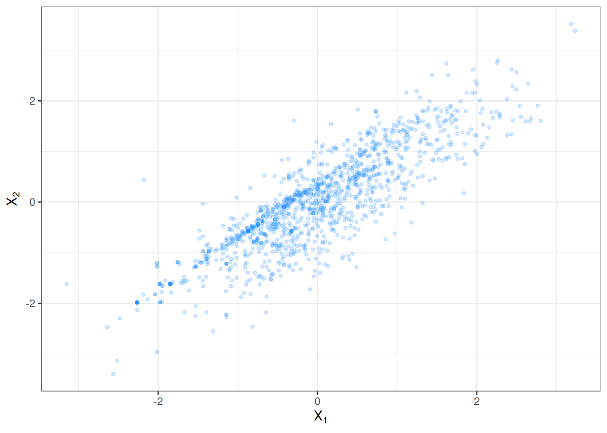
9.9 PCA: Toy Example
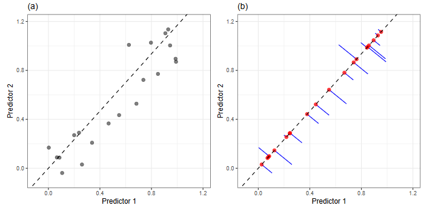
PCs with 2 features. [Adapted from FE&S, Kuhn and Johnson]
9.10 PCA: Toy Example
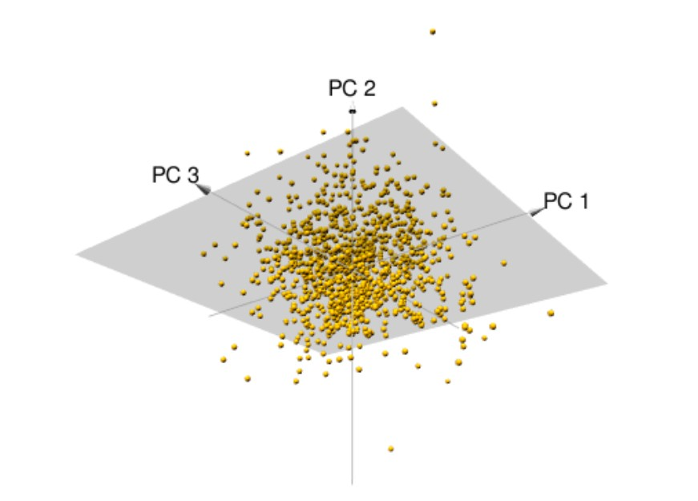
PCs with 3 features. [Adapted from HMLR, Boehmke & Greenwell]
9.11 PCA: First PC
The first principal component\(Z_1\) of a set of features \(X_1, X_2, \ldots, X_p\) is the normalized linear combination of the features that has the largest variance.
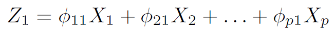
By normalized, we mean \(\displaystyle \sum_{j=1}^p \phi^2_{j1}=1\).
For the \(i^{th}\) observation,
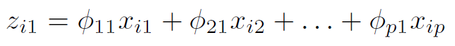
The elements \(\phi_{11},\phi_{21}, \ldots, \phi_{p1}\) are loadings of the first PC. The loadings make up the first PC loading vector\(\phi_1=(\phi_{11} \ \ \phi_{21} \ \ \ldots \ \ \phi_{p1})^T\).
\(z_{11}, z_{21}, \ldots, z_{n1}\) are the first PC scores.
9.12 PCA: First PC
Suppose an \(n \times p\) feature matrix \(\mathbf{X}\).
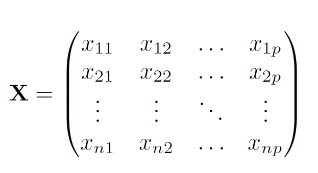
The first PC is obtained by solving
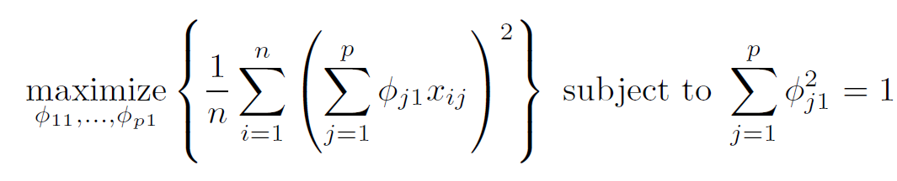
9.13 PCA: Second PC
The second principal component\(Z_2\) is the linear combination of \(X_1,\ldots,X_p\) that has maximal variance among all linear combinations that are uncorrelated with \(Z_1\).
The second PC scores are \(z_{12}, z_{22}, \ldots, z_{n2}\) where
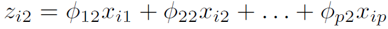
\(\phi_2\) is the second PC loading vector with loadings\(\phi_{12},\phi_{22}, \ldots, \phi_{p2}\).
\(Z_2\)uncorrelated with \(Z_1\) is equivalent to \(\phi_2\) being orthogonal (perpendicular) with \(\phi_1\).
9.14 PCA: How Many PCs to Use?
We would like to use the smallest number of PCs required to get a good understanding of the data.
CV cannot be implemented to answer this question.
Two common approaches in helping to make this decision (depends on the objective and analytic workflow):
Proportion of variance explained (PVE)
Screeplot. Look for an elbow.
9.15 Clustering
Broad class of techniques for finding subgroups or clusters in a dataset.
Partition the data into distinct groups so that observations within each group are similar to each other.
Definition of similarity depends on the context and the dataset being studied.
We will talk about:
K-means clustering
Hierarchical clustering
9.16 Clustering: Applications
Cancer research: \(n\) observations correspond to tissue samples for patients with different types of cancer, \(p\) features correspond to gene expression measurements.
Market segmentation: \(n\) observations on \(p\) variables. Identify subgroups of people who might be more receptive to a particular form of advertising.
Social network analysis, astronomical data analysis, organizing computing clusters etc.
9.17 K-Means Clustering
Partition the dataset into a pre-specified number of \(K\) distinct, non-overlapping clusters.
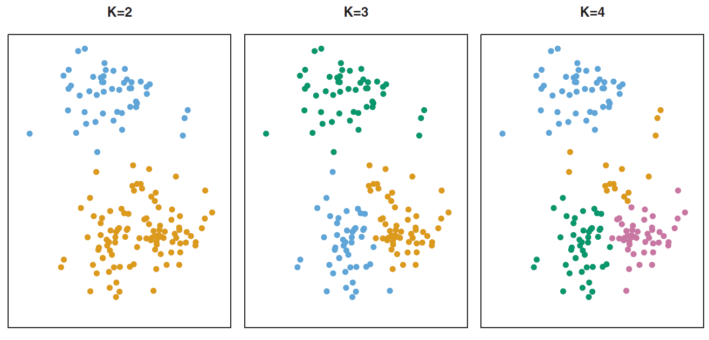
The coloring (ordering) of the clusters is arbitrary.
9.18 K-Means Clustering
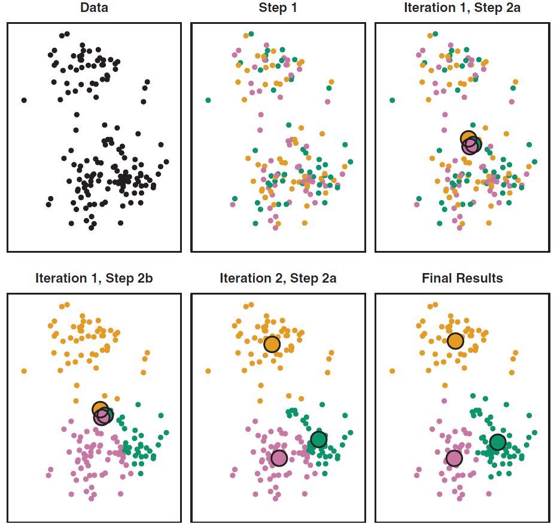
9.19 K-Means Clustering
The idea behind K-means clustering is that a good clustering is one for which the within-cluster variation is as small as possible. The resulting clusters are such that
each observation belongs to at least one cluster, and
clusters are non-overlapping, no observation belongs to more than one cluster.
9.20 K-Means Clustering Formulation
The within-cluster variation for cluster \(C_k\) is a measure \(W(C_k)\) of the amount by which the observations within a cluster differ from each other. Thus the objective is to
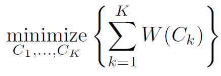
where
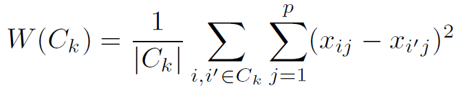
Combining, we have,
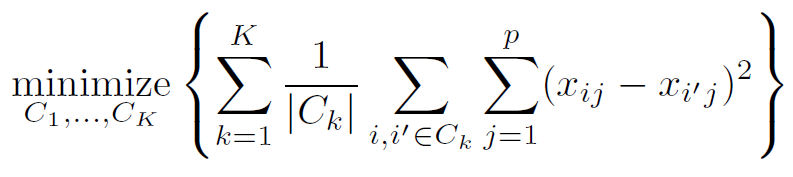
9.21 K-Means Clustering Algorithm
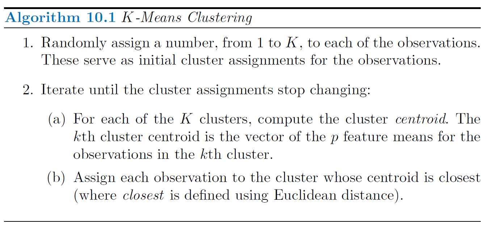
9.22 K-Means Clustering Algorithm
The algorithm is guaranteed to decrease the value of the objective at each step since
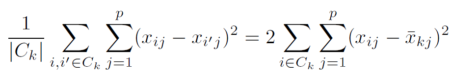
where \(\bar{x}_{kj}=\frac{1}{|C_k|}\sum_{i \in C_k} x_{ij}\): mean of \(j^{th}\) feature in cluster \(C_k\).
The algorithm is not guaranteed to find the global optimum.
Results depend on the initial (random) cluster assignments. It is recommended to run the algorithm multiple times from different random initial configurations.
9.23 K-Means Clustering Algorithm
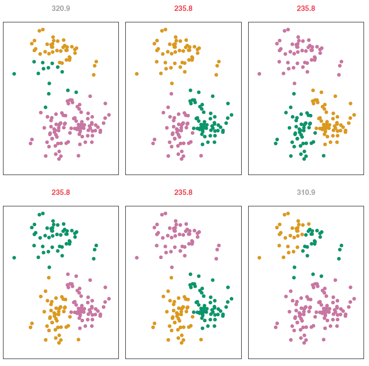
9.24 Hierarchical Clustering
K-means clustering requires us to pre-specify the number of clusters \(K\). This can be a disadvantage.
Hierarchical clustering is an alternative approach which does not require that we commit to a particular choice of \(K\).
Hierarchical clustering results in a tree-based representation of the observations, called a dendrogram.
We discuss bottom-up or agglomerative clustering. This is the most common type of hierarchical clustering. The dendrogram is built starting from the leaves (bottom) and combining clusters up to the trunk (top).
9.25 Hierarchical Clustering
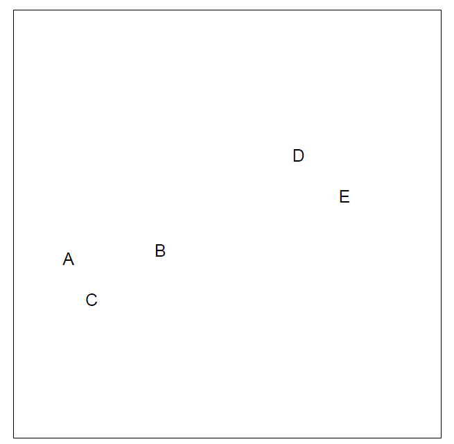
9.26 Hierarchical Clustering
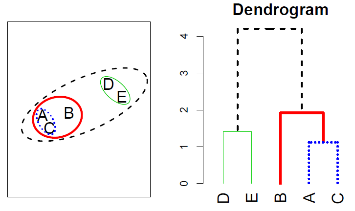
9.27 Hierarchical Clustering: Types of Linkage
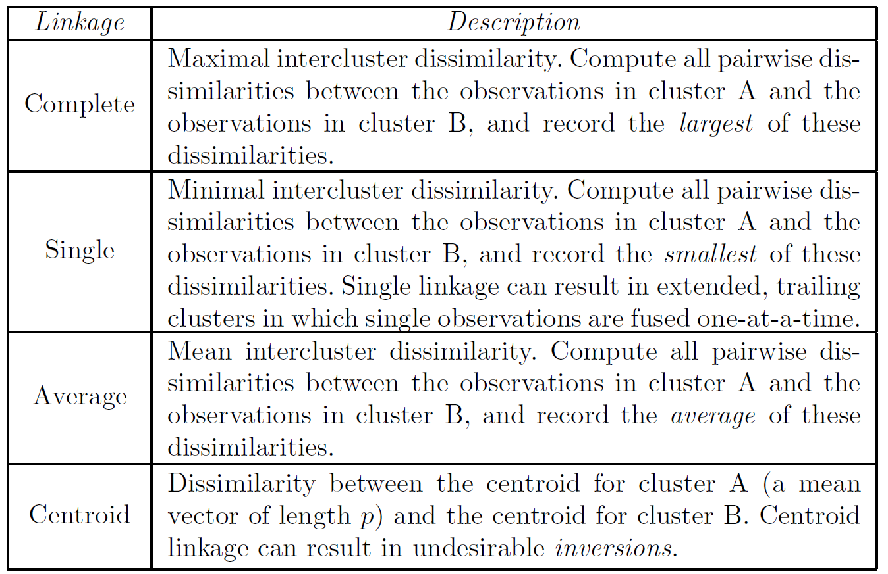
9.28 Hierarchical Clustering Algorithm
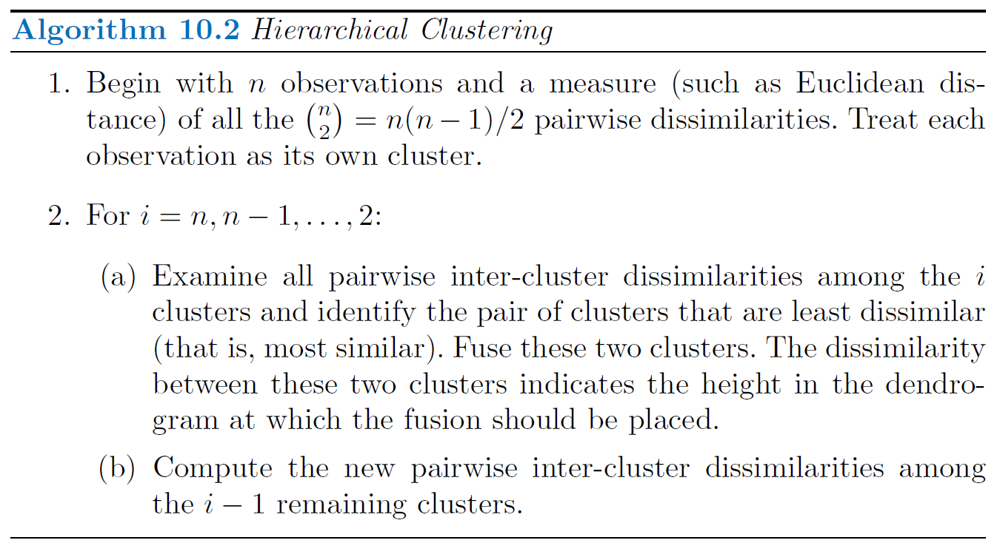
9.29 Practical Issues in Clustering
Scaling of the variables matters.
Choices in hierarchical clustering.
Dissimilarity measure
Type of linkage
Where to cut the dendrogram?
Choices in K-means clustering.
What should be the value of \(K\)?
Clustering methods are not very robust to perturbations to the data.
Which features should be used for clustering?
For more details, see Elements of Statistical Learning, Chapter 14.
9.30 To Sum It All Up
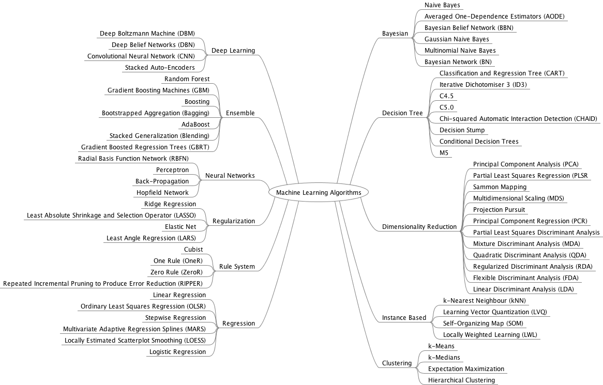
9.31 ML Ethics and Fairness
As recently as 2015, a major corporation reportedly utilized a model to evaluate applicants’ resumes for technical posts. They scrapped this model upon discovering that, by building this model using resume data from its current technical employees (mostly men), it reinforced a preference for male job applicants. (see Dastin 2018)
Facial recognition models, increasingly used in police surveillance, are often built using image data of researchers that do not represent the whole of society. Thus, when applied in practice, misidentification is more common among people that are underrepresented in the research process. Given the severe consequences of misidentification, including false arrest, citizens are pushing back on the use of this technology in their communities (see Harmon 2019)
In 2020, the New York Civil Liberties Union filed a lawsuit against the U.S. Immigration and Customs Enforcement’s (ICE) use of a “risk classification assessment” model that evaluates whether a subject should be detained or released (see Hadavas 2020). This model is notably unfair, recommending detention in nearly all cases.